这一课的语法风险和上一课不同：助动词不是难点，难点是「问的是哪个时间」。同样一句话里常常有两个时间 —— I got my first job six months after I graduated 里就有「毕业后」和「六个月后」两层，问句可以落在任何一层。另外要分清时间点（at six、in 1988）和时间段（in two hours、as soon as possible），这两类问题的问法不完全一样。
课本 p.94–97
15 个陈述句 + 1 个例题
时间点 vs 时间段
01先把造问句的骨架搭好
造 When 问句，先做一件事：把原句里的时间信息圈出来，然后决定问哪一个。这一步做对，剩下的只是助动词。
圈出时间 — 原句给了哪些时间信息"I quit smoking two years ago." → 只给了一个时间：两年前。
看清是点还是段 — 时间点问 at / on / in，时间段问 how long 或 whenWhen did you quit? / How long ago did you quit?
配助动词 — 时态跟着原句走quit 是过去 → did；will be back 是将来 → will。
最实用的一句：When did you…?
它用 did + 动词原形，能问几乎所有的过去事件。这一课 15 道题里有 8 道都能用它开头：
When did you get up? / When did you quit? / When did you meet her?
不确定用什么时，先用这一句开口，后面再补细节。
02三个时间维度 + 一个介词陷阱
When 问句的技术核心是分清「时间点」「时间段」「条件」三种情况。第三种最容易错，因为 when 有时根本不是疑问词。
A · 三种时间，三种问法
原句给的是
问什么
用什么问
本课例子
时间点 具体的时刻、日期、年份
「在什么时候」
When do you…? / When did you…? / When is…?
When do you get up? / When were you born? / When is her show on?
时间段 / 期限 in two hours、in five years、at 50
「多久之后」
How soon…? / When will…? / How long…?
When will he be back? / When are you planning to go?
条件 when I play with my children
不是时间，是「什么时候会……」
把 when 当连词，问的是结果
When do you feel happy?（问的仍是时间条件，但答案是感受）
第 7 题是个陷阱：I feel happy when I play with my children.
这里的 when 不是疑问词，是连词「当……的时候」。所以不能直接把 when 提到句首：
✗ When feel happy when play with children? ✓ When do you feel happiest? / What makes you happy? 造问句时要问「什么时候感到幸福」，而不是照抄那个 when。
B · 「多久之后」用 in，不用 after
这是本课最容易被中文带偏的一条。中文说「两小时后」，英语用 in + 时间段，而且只用在将来时。
in + 时间段
将来「……之后」：He'll be back in two hours.
after + 事件/名词
「在某个事件之后」：two years after they married
ago
过去「……之前」：two years ago，前面不加介词
as soon as possible
「尽快」：I want to retire as soon as possible.
对比记：in 往前看，ago 往后看。He'll be back in two hours.（从现在起两小时后）
He came back two hours ago.（两小时前）
同一个「两小时」，一个用 in 一个用 ago，方向相反。
C · 前置时间的问法：问「什么时候」还是问「多久以后」
你想问
用什么
例子
什么时候（点）
When…? / What time…?
What time does your school start?
多久以后（段）
How soon…?
How soon will he be back?
隔多久（频率）
How often…?
How often do you go to bed at midnight?
持续多久（长度）
How long…?
How long did you live there?
03课本例题：一句话，两个问句
例题的陈述句是 I got my first job six months after I graduated from college.。这句话里有两个时间层次：毕业、以及毕业后六个月。课本给了两个问句，正好各问一层。
Example
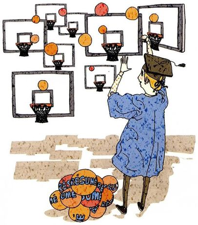
I got my first job six months after I graduated from college. /ˈɡrædʒueɪt/
The statementI got my first job six months after I graduated from college.
What to ask about两个时间层次：① 得到第一份工作的时刻；② 开始工作这件事本身。用 did + 动词原形。
Questions you can ask①When did you get your first job? ②When did you start working? ③How long did it take you to find a job after graduating?
第 ③ 个问句是加分项。
课本只给了两个问句，但这句话里其实还藏着一个信息：「六个月」—— 它回答的是 How long did it take?能问出第三个问题，说明你真的读懂了句子的结构，而不只是机械地把 when 提到前面。
「我毕业后」不要写成 after I graduate。
原句是过去的事（got my first job），所以从句也要用过去时：after I graduated。
时态一致性是这一课的第二大错误来源，第 13 题（after they got married）也会撞上。
04十五个陈述句：怎么问出好问题
每张卡三段：The statement 课本原句，What to ask about 说清时间在哪一层、助动词怎么选，Questions you can ask 给三个问句 —— 一个最基本、一个更具体、一个换个角度。
01
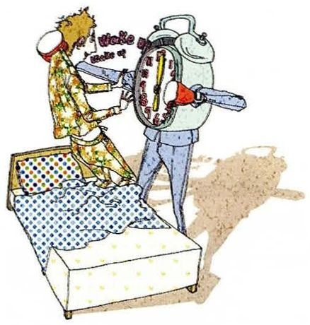
I always get up at six.
The statementI always get up at six.
What to ask about一般现在时（习惯）→ 用 do。时间点是 at six，问「几点」用 What time 比 When 更自然。
Questions you can ask①When do you get up? ②What time do you get up? ③When do you usually get up on weekends?
02
I'm planning to take a round-the-world trip in five years.
The statementI'm planning to take a round-the-world trip in five years.
What to ask about课本脚注：round-the-world = 环游世界，回到出发点。将来 → 用 are you planning to。in five years 是「五年后」，不是「五年里」。
Questions you can ask①When are you planning to go? ②When do you think you'll actually do it? ③How long will the trip take?
03
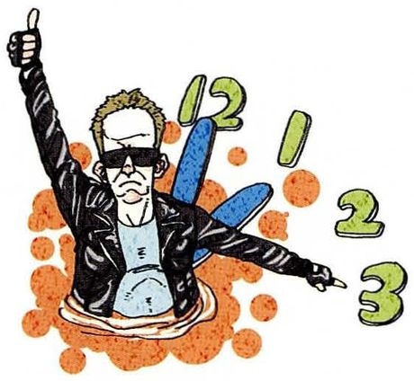
He will be back in two hours.
The statementHe will be back in two hours.
What to ask about有 will → 用 will 提到主语前。in two hours = 两小时后，问「多久以后」用 How soon，问「什么时候」用 When。
Questions you can ask①When will he be back? ②How soon will he be back? ③Where has he gone?
04
The Korean War broke out in 1950.
The statementThe Korean War broke out in 1950.
What to ask about课本脚注：break out = 突然开始（战争、火灾、疾病）。过去时 → 用 did，broke 还原成 break。
Questions you can ask①When did the Korean War break out? ②When did it end? ③What caused it?
05
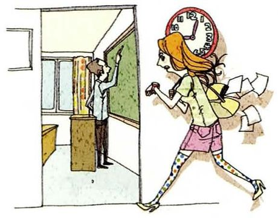
My school starts at nine.
The statementMy school starts at nine.
What to ask about一般现在时 → 用 does（主语 my school 是单数）。问「几点」用 What time。
Questions you can ask①What time does your school start? ②When does it finish? ③How long does it take you to get there?
06
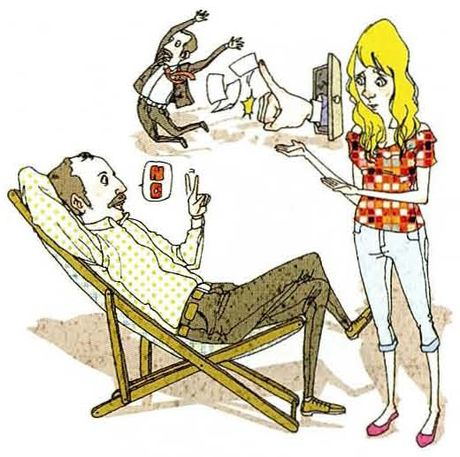
I want to retire as soon as possible, maybe at 50.
The statementI want to retire as soon as possible, maybe at 50.
What to ask about课本脚注：retire = 因年龄原因停止工作。有 want to → 用 do you want to。
Questions you can ask①When do you want to retire? ②When do you think you'll actually be able to? ③What will you do after you retire?
07
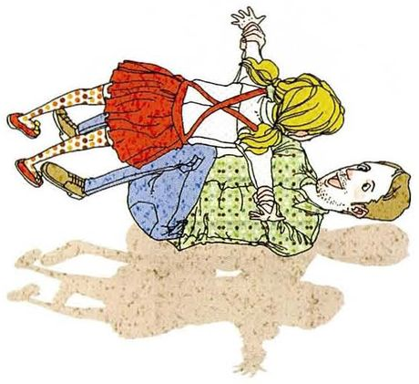
I feel happy when I play with my children.
The statementI feel happy when I play with my children.
What to ask about这里的 when 是连词（当……的时候），不是疑问词。要问「什么时候感到幸福」，不能让两个 when 撞在一起。
Questions you can ask①When do you feel happiest? ②What makes you happy? ③When do you usually play with them?
08
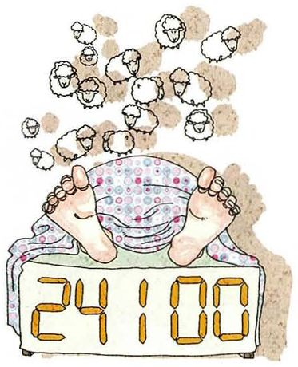
I usually go to bed at midnight.
The statementI usually go to bed at midnight.
What to ask about一般现在时 → do。注意 go to bed（上床睡觉）和 go to sleep（入睡）不同。
Questions you can ask①What time do you go to bed? ②When do you usually go to bed? ③How many hours do you sleep?
09
I quit smoking two years ago.
The statementI quit smoking two years ago.
What to ask aboutquit 是过去式（也是原形，同形）→ 用 did。注意 quit smoking：quit 后面接动名词。
Questions you can ask①When did you quit smoking? ②How long ago did you quit? ③What made you decide to stop?
10
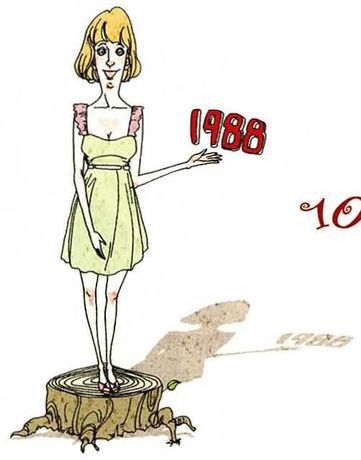
I was born in 1988.
The statementI was born in 1988.
What to ask about有 was → 直接用 were 倒装。注意 born 的搭配：be born，永远用被动形式。
Questions you can ask①When were you born? ②What year were you born? ③Where were you born?
11
Her favorite show is on Tuesday at 9:00.
The statementHer favorite show is on Tuesday at 9:00.
What to ask about有 is → is 倒装。注意 be on 是「（节目）在播」的意思，不是「在上面」。
Questions you can ask①When is her favorite show on? ②What day is it on? ③When does it start?
12
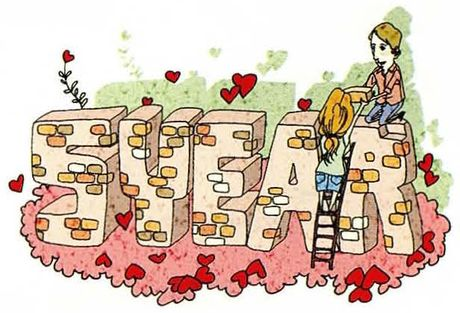
He met his wife five years ago.
The statementHe met his wife five years ago.
What to ask aboutmet 是过去式 → 用 did，还原成 meet。主语是 he，但 did 不随人称变。
Questions you can ask①When did he meet his wife? ②How long ago was that? ③Where did they meet?
13
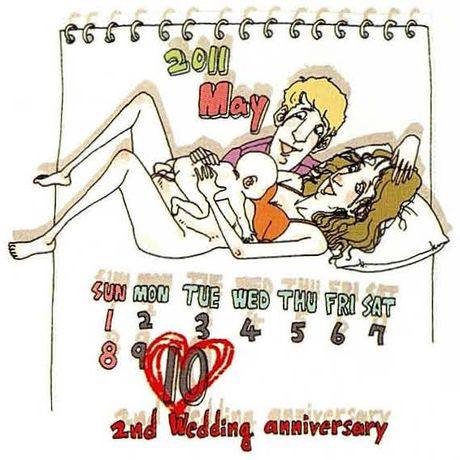
Their first child was born two years after they got married.
The statementTheir first child was born two years after they got married.
What to ask about两个事件、两个时间。可问孩子出生、结婚、或两者间隔。注意 after 后面接从句时也要用过去时（got）。
Questions you can ask①When was their first child born? ②When did they get married? ③How long after the wedding was the baby born?
14
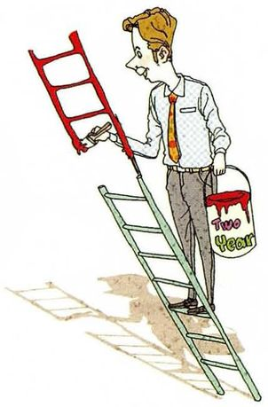
I think I should get a promotion in two years.
The statementI think I should get a promotion in two years.
What to ask about有 should（应该）和 in two years（两年后）。这题适合问得更深：不是问「什么时候」，而是问「凭什么」。
Questions you can ask①When do you think you'll get a promotion? ②When did you last get one? ③What would you need to do to earn it?
15
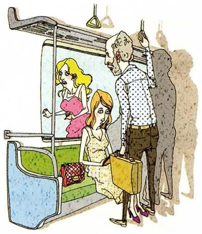
Soon after getting off the subway, she realized she'd left her bag behind.
The statementSoon after getting off the subway, she realized she'd left her bag behind.
What to ask about三个时间点：下地铁、意识到、丢包。realized 过去时 → did。「意识到」用 realize，不是 know。
Questions you can ask①When did she realize? ②When did she notice the bag was gone? ③What did she do then?
05重点词汇（美式音标）
课首页脚注只有 3 个词，但都是这一课专用的表达。下面另加了时间表达的完整搭配。
A · 课本脚注的 3 个词
词
音标
课上怎么用
中文
round-the-world
/ˌraʊnd ðə ˈwɜːrld/
a round-the-world trip 环游世界。作定语时连字符相连
环游世界的
break out
/breɪk aʊt/
The war broke out in 1950. 突然爆发（战争、火灾、疾病）。不及物
爆发
retire
/rɪˈtaɪər/
retire at 60 / retire early 退休。不加宾语
退休
B · 时间表达的完整搭配
表达
音标
课上怎么用
中文
ago
/əˈɡoʊ/
two years ago 过去「……前」，前面不加介词
……以前
in + 时间段
/ɪn/
in two hours 将来「……之后」。别用 after
……之后
as soon as possible
/əz suːn əz ˈpɑːsəbl/
as soon as possible 尽快。口语常缩成 ASAP
尽快
at midnight
/æt ˈmɪdnaɪt/
go to bed at midnight 午夜。钟点用 at
午夜
on + 星期
/ɑːn/
on Tuesday
在周二
in + 年
/ɪn/
in 1988 / in 1950
在……年
leave behind
/liːv bɪˈhaɪnd/
leave your bag behind 把东西落下
遗落
C · 问时间的四种句式
句式
音标
在问什么
中文
When did you…?
/wen dɪd juː/
过去某个时间点。本课最常用
你什么时候……
How soon…?
/haʊ suːn/
多久以后。配将来时
多久之后
How long ago…?
/haʊ lɔːŋ əˈɡoʊ/
多久以前。配过去时
多久以前
What time…?
/wʌt taɪm/
具体钟点。比 When 更精确
几点
How long…?
/haʊ lɔːŋ/
持续多久（长度）
多久
06老师大概率会问的问题
这一课会让老师反问你：你自己是什么时候做这些事的。准备好几个真实的年份。
When did you start doing something you still do today?
Cooking, when I was about nineteen and moved into my first flat. Not because I was interested — because the alternative was spending all my money on takeaways. What's odd is that I kept it up after the reason disappeared, so it's become the longest-running habit I have.
Between about eight and eleven in the morning, which took me years to accept because I wanted to be a night person. What I'd add is that the feeling isn't reliable — some mornings I'm sharp at seven, and occasionally the whole day is fine. So I don't schedule my hardest work by the clock, I do it first and assume the good hours will follow.
先给时间段，再推翻「按钟点安排」的想法。do the hardest thing first and assume the good hours will follow 是可以直接用的策略。
Is it polite to ask people when they're going to get married or have children?
In Chinese families, it's not only polite, it's expected — and it's still a question I'd rather not be asked. In English it would read as intrusive from anyone but a close friend. So the phrase is easy to build and the timing is the hard part: "when are you getting married" is grammatically fine and socially expensive.
区分「句子对不对」和「该不该问」，正是 Part III 想训练的东西。最后那句 grammatically fine and socially expensive 很精炼。
When did you last learn something from a mistake?
Last month. I sent a paper draft to my supervisor without reading it a second time, and he found a mistake in the second paragraph. I've since started waiting a day before sending anything long — not because I've become more careful, but because I now know what it feels like to be caught by something I could have seen.
How is asking "when" different from asking "how long"?
"When" gives you a point, "how long" gives you a duration — but the useful difference is what they do to the conversation. "When did you move here" invites a story. "How long have you lived here" invites a number. If I want to talk to someone, I ask when; if I want to fill a silence politely, I ask how long.
把语法区别转化为「对话效果的区别」，是很高级的语言意识。老师会明显感到学生不只是在背语法。
Make me a When question about something in this room.
"When did you get that bookcase?" It's the only thing here that looks like somebody chose it rather than inherited it. Or, better: "When did you last use the whiteboard?" — that one usually gets an honest answer.
现场造问句时，先给一个观察，再给问句，比干巴巴地问一句强得多。chose it rather than inherited it 也是很自然的表达。
07这节课最容易犯的错
这一课的错误集中在三处：助动词后面动词没还原、「多久之后」用错介词、以及被原句里的 when 连词误导。
✗When did he met his wife? ✓When did he meet his wife?
did 后面动词必须用原形。第 4、9、12、15 题都会撞上。这一课的头号错误。
✗He will be back after two hours. ✓He'll be back in two hours.
将来「两小时后」用 in，不用 after。after 后面接事件或名词（after lunch / after the meeting）。
✗When feel happy when I play with children? ✓When do you feel happiest?
第 7 题原句里的 when 是连词，不是疑问词。造问句时不能照抄，要问「什么时候感到最幸福」。
✗When you were born? ✓When were you born?
be 动词问句要倒装：were you，不是 you were。这条漏了最显眼。
✗I born in 1988. ✓I was born in 1988.
born 永远配 be 动词：be born。不能说 I born。第 10、13 题都会用到。
✗When do your school start? ✓When does your school start?
主语 your school 是第三人称单数，用 does。第 5 题最容易错，因为说话时容易跟着 you 走。
✗When did you quit to smoke? ✓When did you quit smoking?
quit 后面接动名词：quit smoking。加 to 意思会变成「停下来去做另一件事」。
✗When did she realize she left her bag? ✓When did she realize she'd left her bag?
「发现」在「丢包」之后，所以丢包要用过去完成时 had left。第 15 题的时间层次比看起来复杂。
08五十分钟怎么用
这一课的准备重点是「时间层次」，不是助动词。
课前 10 分钟：只看第 02 节 A 表三种时间把 15 句分别归到「时间点」「时间段」「条件」里。归错类的，问句一定造错。
记牢 in / ago / after 三个方向in two hours 往后看、two hours ago 往前看、after the meeting 接事件。这一课最值钱的三个介词。